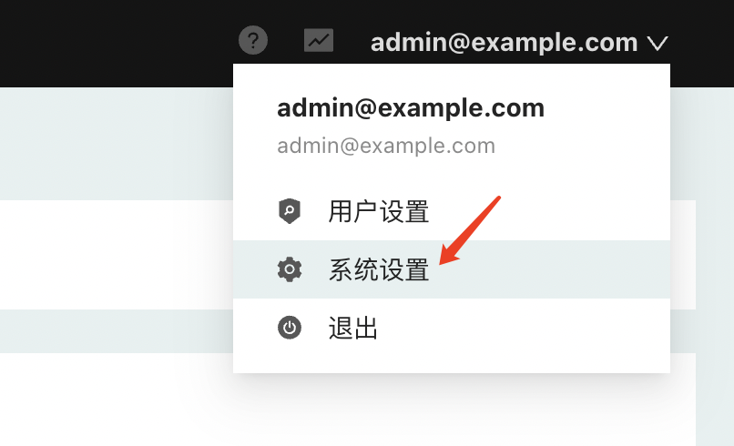
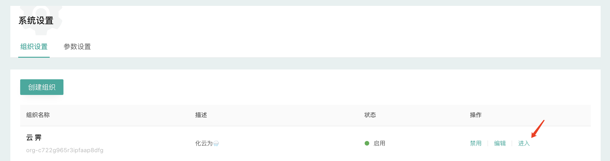
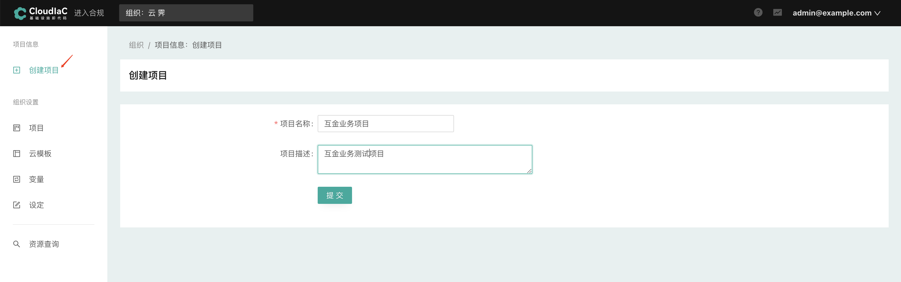
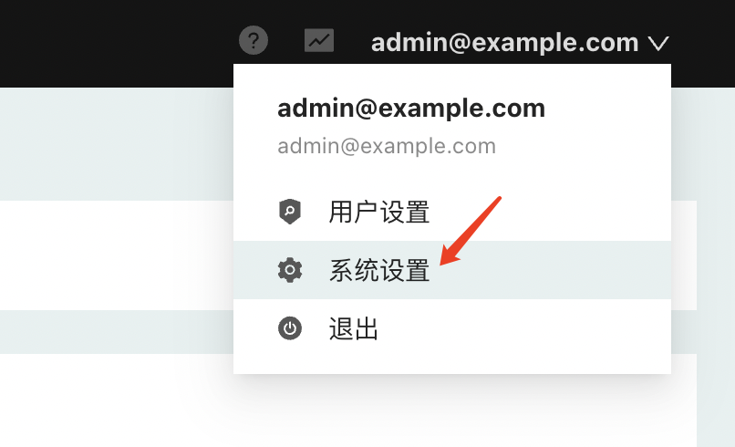
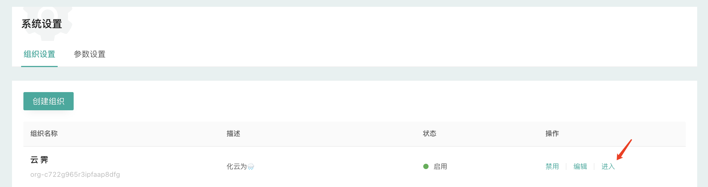
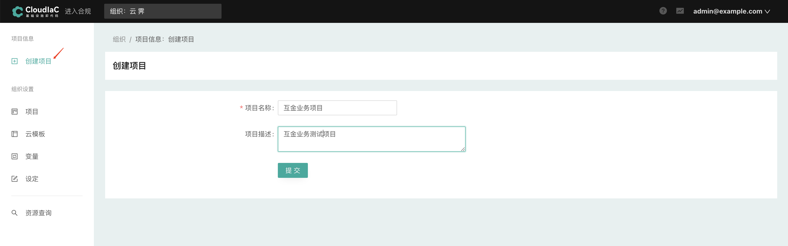

创建组织及项目
组织是CloudIaC中最高层级的逻辑实体，多个组织间数据隔离。
- 管理员首次登录CloudIaC，首先需要创建一个组织：

- 在『系统设置』-『组织设置』中点击『创建组织』

- 创建组织的点击右侧的『进入』进入组织界面

- 在组织界面中，您可以按不同维度来创建项目，比如按照应用维度、组织维度来进行项目规划都可以

- 项目创建后，默认切换到该项目

组织是CloudIaC中最高层级的逻辑实体，多个组织间数据隔离。



| Keys | Action |
|---|---|
| ? | Open this help |
| n | Next page |
| p | Previous page |
| s | Search |